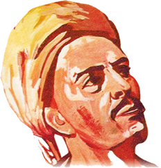

YUNUS EMRE
Yunus Emre (1238[3][7] - 1328), Anadolu'da Türkçe şiirin öncüsü olan tasavvuf ve halk şairi. Yunus Emre, Anadolu Selçuklu Devleti'nin dağılmaya ve Anadolu'nun çeşitli bölgelerinde büyük-küçük Türk Beylikleri'nin kurulmaya başladığı 13. yüzyıl ortalarından 14. yüzyılın ilk çeyreğine kadar Orta Anadolu havzasında Eskişehir'in Sivrihisar ilçesinde yer alan Sarıköy'de yetişmiş Ankara'nın Nallıhan ilçesindeki Taptuk Emre Dergâhında yaşamıştır.
Yunus Emre Sözleri
Hiç kimseye yan bakma! Öfkelenip sert çıkma! Kalp Allah’ın evidir, bu evi sen yıkma.
Kendimi bir nokta olarak gördüğümde, bir bakmışım ki anlamlı bir cümlenin sonundayım…
Âşık öldü diye sala verirler. Ölen bedendir, âşıklar ölmez.
Elbiseye kan bulaştığı zaman onu yıkamadıkça temiz olmaz. İnsan gönlünden dünya pasını temizlemedikçe kıldığı namazlar da yerini bulmaz.